World of Ukrainian Women 乌克兰妇女世界 more_horiz 欢迎来到乌克兰妇女世界的收藏！由 Olena Borysovska (@Nft_artBo) 创建和说明。 这个系列是在乌克兰的空袭警报声下创建的，目的是让他们停下来。我想把世界变成
World Of White Dudes 你最喜欢的 NFT World of White Dudes 是 10,000 名独特、酷炫且多样化的NFT 白人帅哥的集合，他们名叫 Bob，在会计部门工作（“Bob”）。Bobs 在以太坊区块链上生
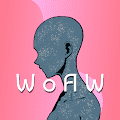 World of Zuki Women Zuki 女子世界统计数据 创建于 5 个月前，5,555 代币供应 5% 费用，1,558 名 Discord 成员 World of Zuki Women NFT 在过去 7 天被售出 4 次。Zuki Women 的总销售额为 19.65 美元。
World Save Ukraine by Holy Water 圣水拯救乌克兰 more_horiz WorldSaveUkraine 是一个 NFT 慈善收藏，旨在通过将 100% 的销售额和版税直接捐赠给乌克兰的官方钱包，为乌克兰筹集 100 万美元以上。 我们联合了 400 多位乌克兰艺
Wronguns Wronguns 是来自 Everyday Strange 收藏的可疑人物 Wrongun 代币持有者将收到艺术空投和独特角色艺术品版本的抽奖活动。 什么是错误的？ Wronguns 是一个 NFT（非同质代币）集合。 存储在区
WWE NFT 过去 7 天没有出售 WWE NFT。 World Wrestling Entertainment 官方 NFT 页面 随着世界即将发生碰撞，Ricochet 向 Carmelo Hayes 提出了挑战 Ricochet 只是 NXT 2.0 上众多令人惊讶的出场之一，这位前洲
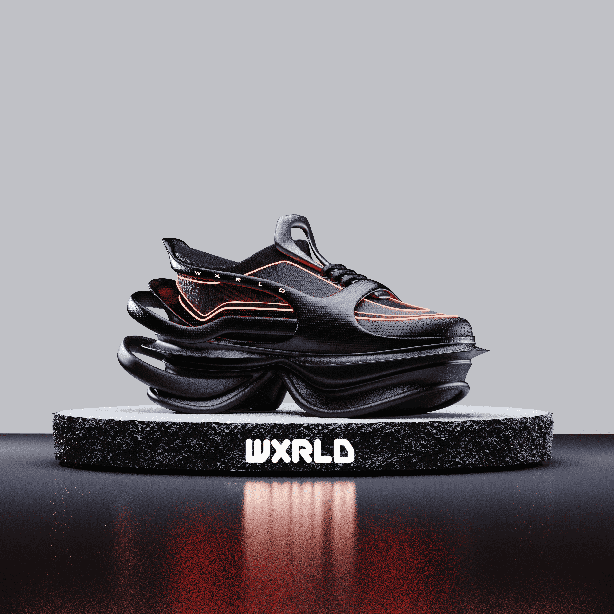 WXRLD PREMIERE SNEAKER 介绍第一款 WXRLD 运动鞋：WXRLD PREMIERE 由 Lightning X Tech 提供支持。WXRLD PREMIERE 是社区为我们的首次正式发售选择的名称。 它是关于一小群人如何产生巨大影响的。WX
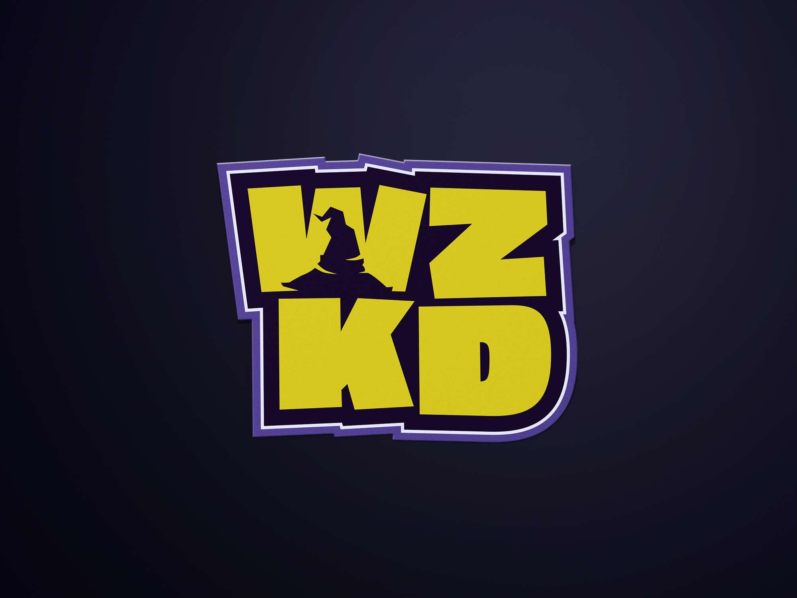 WZKD Official WZKD 是在以太坊区块链上冒险的不可替代代币。 WZKD 将 WEB3 实用程序与非传统游戏联系起来。拥有长期的路线图、强大的合作伙伴关系和专注的团队。 WZKD 计划通过季度
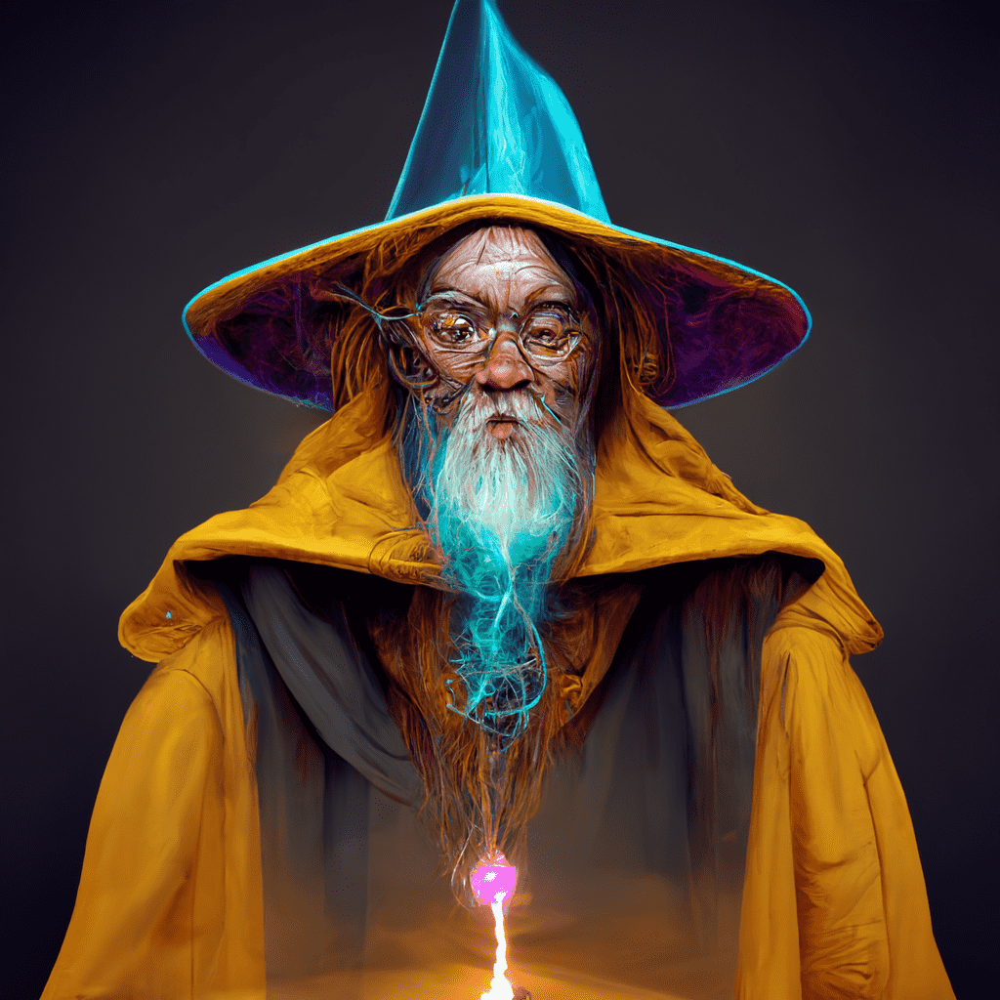 WZRDS AI 7500 UNIQUE WZRDS AI，以最佳艺术风格创作。 1000 免费薄荷，6500 支付 .006 每个令牌，每 TX 最多 5 个。 WZRDS AI NFT 在过去 7 天内售出 48 次。WZRDS AI 的总销售额为 197.59 美元
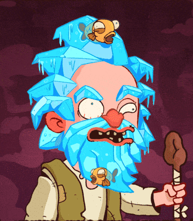 WZRDS NFT Official 首先是免费的 2000，然后是 0.005 ETH。 薄荷在我们的官方网站或合同上。 很久以前，勇敢的探险家发现并定居在神秘的土地上，现在被称为蒂罗尔王国。作
XCOPY Mooncatz Meow - Merged - Meow - Mooncatz 和 XCOPY 一起形成 XCOPY Mooncatz。 良好的氛围 - 能量 - 社区。 XCOPY NFT 在过去 7 天内售出 2 次。XCOPY 的总销售额为 47.61 万美元。一份 XCOPY NFT 的平
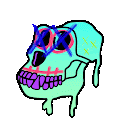 XCOPYMAYC xcopy 和 apes 聚在一起，喝了一种血清来变异并变形为你在你面前看到的一团糟。 与bayc apes 或xcopy 无关，只是巨大的粉丝。 过去 7 天内没有出售 XCOPY
Xenon-Project Xenon 是一个基于 3D 的 PFP 项目。 2254 年地球被环境污染所破坏。 大部分人类已经逃往火星，幸存的人类正试图通过躲在六个扇区中生存。 已经撤离到火星的人类计划救
Xenopets Official 踏上前往 Alpha Anoteros 系统的星际任务，在行星上寻找外星人的发现！ 四个待发现的行星； Xeros Sfaria、Pagos Prasinos、Mykitas Thanatos 和我们的
XMAS Penguins 欢迎来到 OpenSea 上的冬企鹅之家。 发现此系列中最好的物品。售出前 100 件后将显示掉落！ 我们将在每 100 次销售后公布！ 掉落：#1 到 #100 - 0.0125 ETH #101 到 #200 - 0.02 ETH #201 到 #300 -
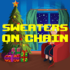 Xmas Sweaters OnChain 第一个 100% 链上、完全可耕作的图案生成器。\在展示之前为您的图案选择一个主题（圣诞节、科幻或加密货币）\带有所有权证明的 IRL 毛衣 \薄荷目前已开放。
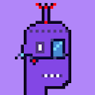 xMaticPunks Special Collection 过去 7 天内没有售出 xMaticPunks 特别合集。为您提供有关 NFT 空间的最新信息。 所有这些独特的朋克都是由我们的设计师设计的，并将免费分发给持有者。 xMaticPunks 特别合集 NFT -
Xongile WildEarth Xongile 是 25 个 WildEarth Genesis Collections NFT 的一部分。 WildEarth 的野生动物保护 NFT 是同类产品中的第一个，因为它们直接有助于保护每只动物生活的栖息地。 原始薄荷的 40% 归属于 Xongile 的栖息地，
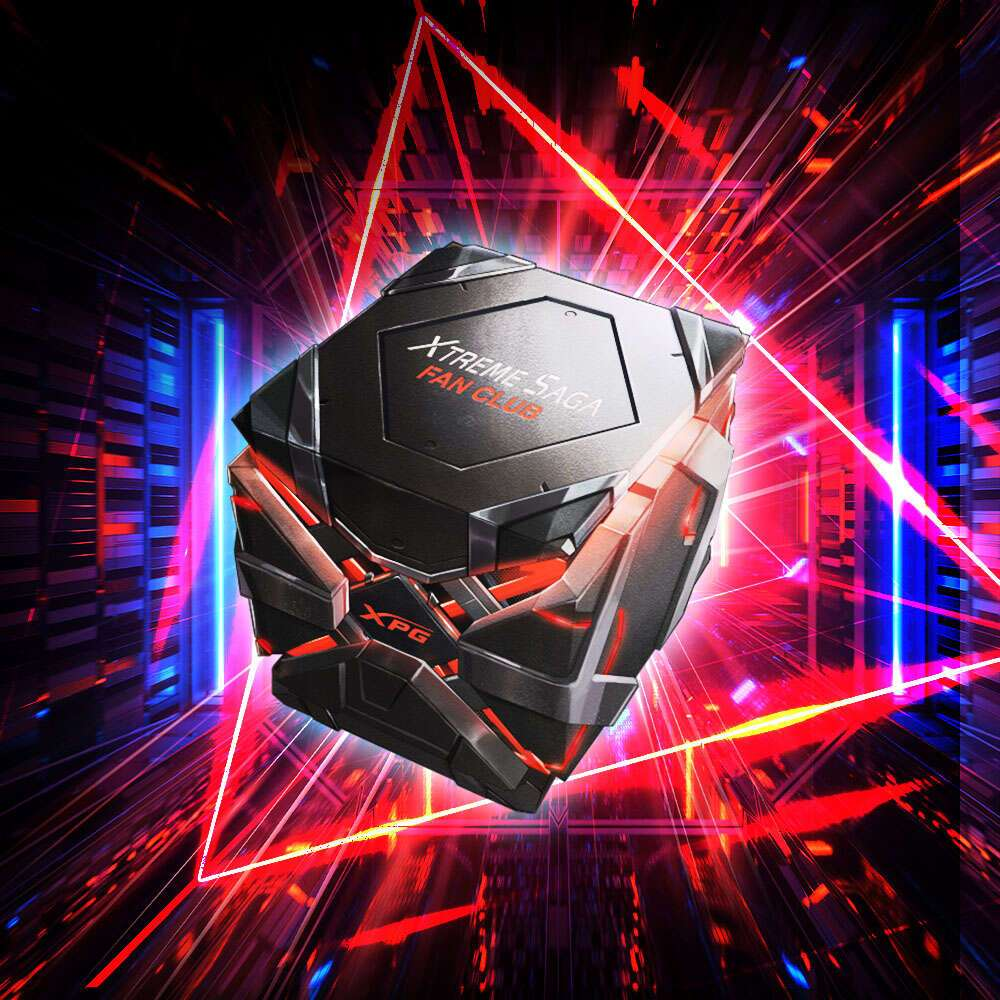 XPG Xtreme Saga Fan Club 第一批 Xtreme Saga 粉丝俱乐部 NFT 具有 999 种独特的图案，可以从幸运抽奖箱中获得。 这批 NFT 中的字符由 Xtreme Saga 字符 MERA、XENIA 和 GAIA 组成。 这 999 种设计中最稀有的
XR Couture 您可以在游戏、虚拟世界、AR/VR 环境等中穿着的可互操作时尚。 METADRIP 是最雄心勃勃的授予数字时尚 NFT 项目的实用程序。 我们的可穿戴设备可以在 Web3 和 Web2 平台
XTINE 过去 7 天内没有 XTINE 售出。3d 艺术家-佣金消息！ 词典恶魔道😈/nfts/metaverse。 Instagram= @xtine_3d本周末被选中参加 FORMING 的 4 位艺术家将
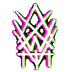 XWAVE Forever 过去 7 天没有售出 XWAVE Forever。安妮塔 №7 艺术之所以存在，是因为死亡存在。 新作品通过 @KnownOrigin_io机器情感№3有一天机器会
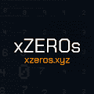 xZEROs 过去 7 天没有售出 xZERO。 xZEROs 是 1001 个真正的跨链唯一生成的 NFT 的实验集合 警告： xZEROs 使用 LayerZero 协议来允许跨链铸造和移动 NFT。这是最早的 NFT 实现之一，并且
Yakuza Monkey Business Yakuza Monkey Business 是一个社区驱动的 DAO 项目，由 Yakuza Inc. 的同一位创建者为您带来。怀着一个目标，社区计划投资广受欢迎的 BAYC “The Otherside”土地出售。 当我
Yakuza Project 欢迎加入黑帮。 Yakuza 是 5,555 个 Yakuza 的 100% 免费薄荷系列。 加入帮派，和我们一起感受吧！ 过去 7 天没有出售 Yakuza 项目。 Yakuza Project NFT - 常见问题（FAQ） ▶ 什么是黑道项目？ Yakuza
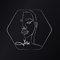 Year of the Woman Beholders Pass Year of the Woman Official Collection: https://opensea.io/collection/yearofthewomanYear of the Woman Beholders Pass 提供多项优惠，包括：两支 YOTW Mints 免费实物商品未来行半价商品与 Yasmin 和 Team 的 VIP Gahterings 独家许可名单机会更多优惠将是 将来添加 女性旁观者通
Yedo Legacy Project Yedo Legacy 是 4949 个 e-Samurai NFT 的集合，将我们的武士道带入元界。 每个 NFT 都是一件独特的 3D 艺术品。 通过拥有 e-Samurai，您可以成为我们社区的一员，授予您对所
YEDO LEGACY YEDO LEGACY Yedo Legacy 是 4949 个 e-Samurai NFT 的集合，将我们的武士道带入元界。 每个 NFT 都是一件独特的 3D 艺术品。 通过拥有 e-Samurai，您可以成为我们社区的一员，授予您对所
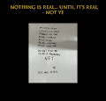 YeeDontDoNFTs 偶尔会有一部文学作品如此深刻，它改变了社会的结构。 这不是那封信，而是 Kanye 写的他最终会后悔的东西。 我们很自豪地通过在非真实区块链上生成的 1000 封非真
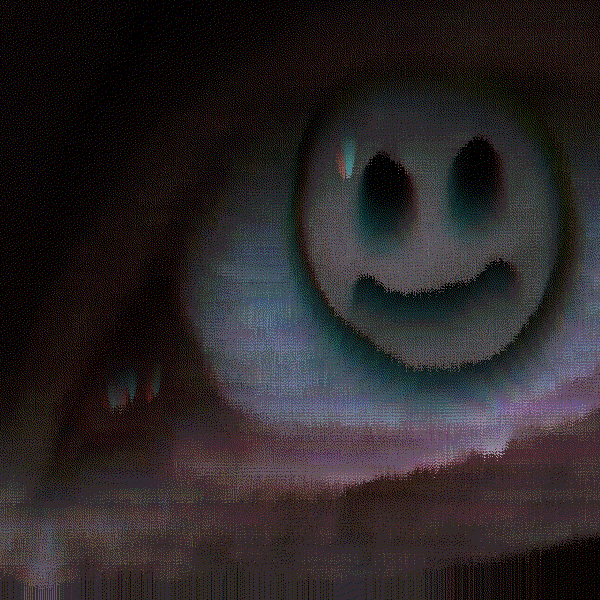 yeedown yeedown NFT 在过去 7 天内售出 5 次。yeedown 的总销售额为 65.87 美元。1 yeedown NFT 的平均价格为 13.2 美元。有 8 个 yedown 所有者，拥有 4 个代币的总供应量。 基于故障图 30+ 天
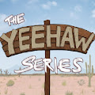 Yeehaw Series 从围绕这个马城的大平原之外收集了 3,221 个肮脏的嘴巴、双重交叉的渣滓。 24 CT 荣誉 8 Magnificent（包括金 Yeehaw 奖品） 20 扑克牌（收集皇家同花顺奖品
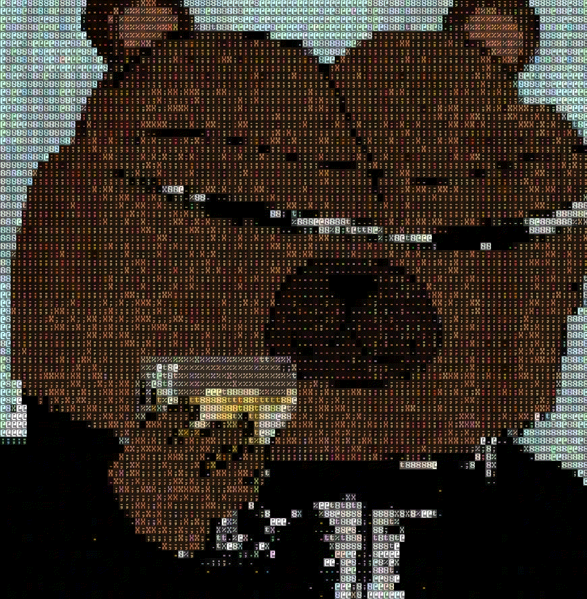 yeethz editionz 过去 7 天内没有 yeethz editionz 售出。 eth 上的 yeethz editionz 用我自己的多方面合同铸造 yeethz editionz NFT - 常见问题（FAQ） ▶ 什么是 yeethz editionz？ yeethz editionz 是一个 NFT（非同质代币
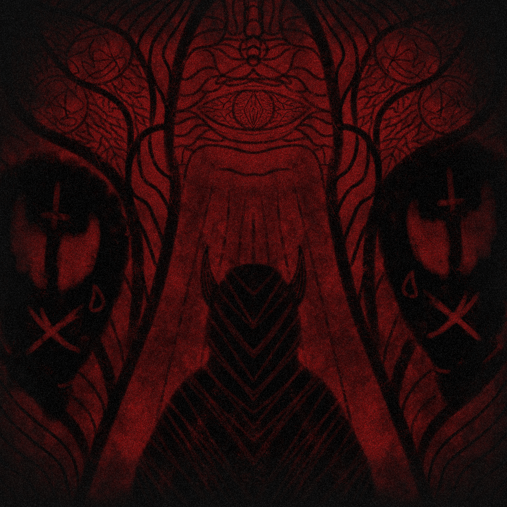 yeetulity DROPS “yeetulity DROPS”专为“yeetulity token”hodlers 提供。[FUTILITY TOKEN] “yeetulity”为hodl
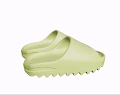 YeezySlides NFT 3D Metaverse 每个钱包 2 个。 每个 .005 ETH。 我为您的 Ape 或 Metaverse 中的任何人创建了可穿戴的 Resin Colorway Yeezy Slides，一旦 SDK 解锁，FBX/OBJ 将包含在 Otherside 的兼容性空投中。 永
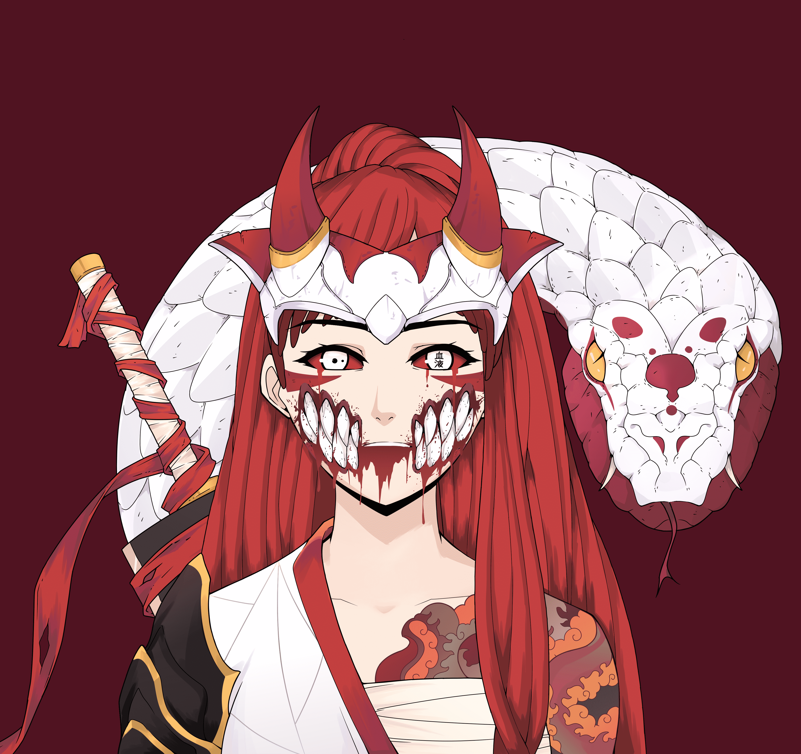 yeogeol 在过去的 7 天里没有售出任何 yeogeol。 1000 个收藏，100% 公开免费。5 分钟内售罄。没有承诺，但这是您进入我们 web3 的通行证 yeogeol NFT - 常见问题（FA
YFU Girls YFU Girls NFT 在过去 7 天被售出 1 次。YFU Girls的总销售额为109.78美元。YFU Girls NFT 的平均价格为 109.8 美元。有 76 位 YFU Girls 所有者，总共拥有 309 个代币。
Yield Hacker Pass YHP - Caio Vicentino 收益 黑客 通行证 收集 Yield Hackers 社区访问权限 | 未开封 白名单 MINT - 免费 + ETH Gas 公共 MINT - 0.25 ETH + ETH Gas 保护您的 NFT 以及您访问世界上增长最快的 Yield Hacker 社区的权限 您的独家通
Yield Universe Planets 这是在虚幻引擎中生成的 5555 个 3D Planet NFT 的集合，将与所有持有者之间的沉浸式、交互式、不断发展的故事情节相关联。 在大量实用程序之上，例如以最大化每个 NFT
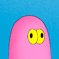 Ykha Amelz 伊卡·阿梅尔兹 2D 艺术家 | 巴博特创始人 | NFT 创作者 | Ykha Amelz 是印度尼西亚自学成才的艺术家。在她的插图中，她通过一系列卡通人物在一个色彩饱和度高的世界
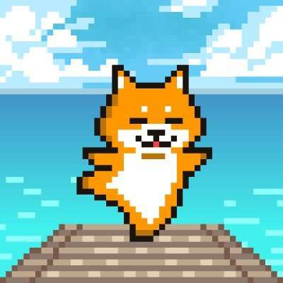 YogaPetz NFT YogaPetz 是 10,000 个 NFT 的集合，代表着平衡的生活、真实的自我和正念。 每个 YogaPetz 都代表您在 YogaPetz 度假村的居住地，我们一起放松、治愈和探索真实的自我。 YogaPetz 度假村的每位居
Yogi Doods Yogi Doods 是由 5,555 个独特的 AI 生成的收藏品组成的集合，这些收藏品生活在以太坊区块链上，同时也是我们著名的 Yogi Clubhouse 的通行证。 过去 7 天没有售出 Yogi Doods。如
YOKAIDO ABOUT BUDDHA VERSEBUDDHAVERSE 是一个具有共同世界观的系列，由艺术家 Kazuki Takakura 的佛像和怪物刻画等多个 NFT 系列组成。每个 NFT 也是高仓的一件艺术品，将是角色的原稿。在这里出生的人物
Young Blood Turtles Society YBTS 这件艺术品是我自己 (Ahmed) 创作的，我是一名自学成才的数字艺术家。 我 11 岁的儿子启发我使用海龟作为这个系列的主角，因为他喜欢海龟，并且它在他成长过程中
ZAM II 为从 2022 年 3 月开始铸造的作品创建的新系列，现在永久存储在 Arweave 上，并由 Manifold 根据我自己的定制合同创建。 大卫鲍伊（1947 - 2016）被认为是二十世纪最